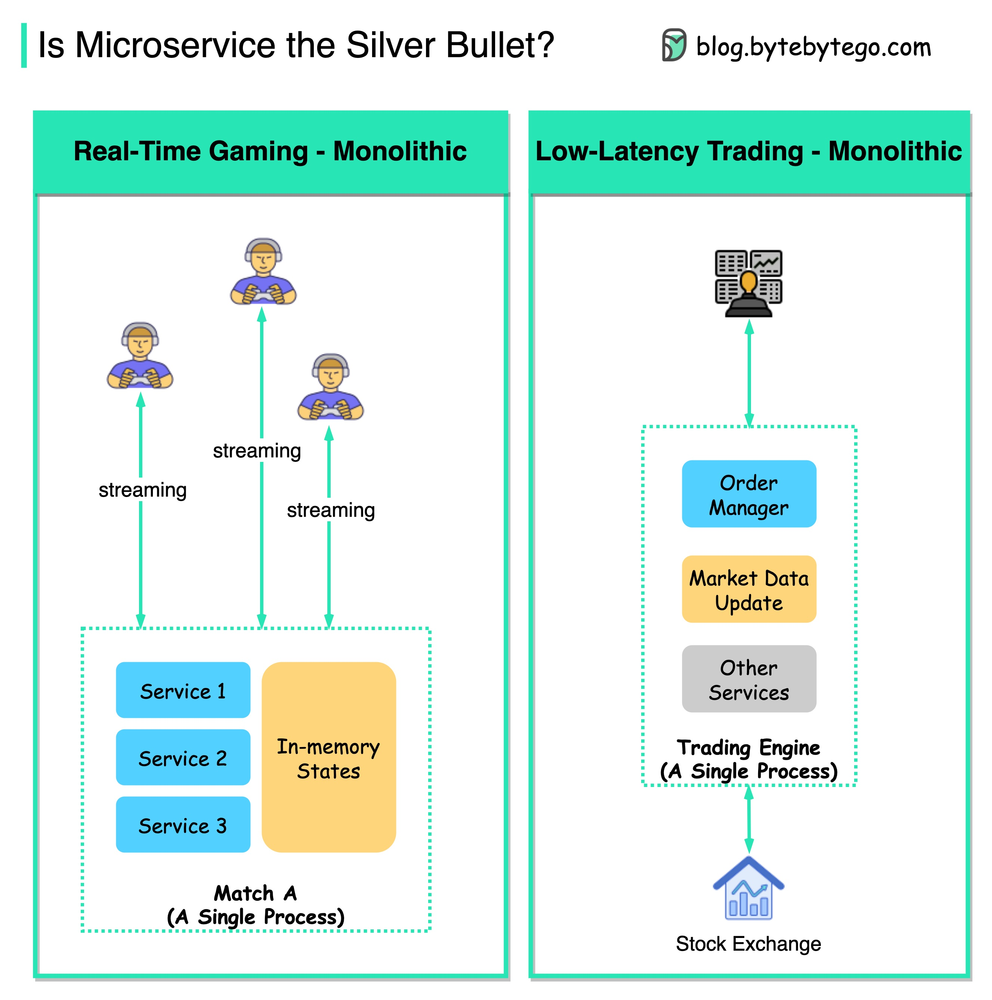

The diagram above shows why real-time gaming and low-latency trading applications should not use microservice architecture.

There are some common features of these applications, which make them choose monolithic architecture:
These applications are very latency-sensitive. For real-time gaming, the latency should be at the milli-second level; for low-latency trading, the latency should be at the micro-second level. We cannot separate the services into different processes because the network latency is unbearable.
Microservice architecture is usually stateless, and the states are persisted in the database. Real-time gaming and low-latency trading need to store the states in memory for quick updates. For example, when a character is injured in a game, we don’t want to see the update 3 seconds later. This kind of user experience can kill a game.
Real-time gaming and low-latency trading need to talk to the server in high frequency, and the requests need to go to the same running instance. So web socket connections and sticky routing are needed.
So microservice architecture is designed to solve problems for certain domains. We need to think about “why” when designing applications.